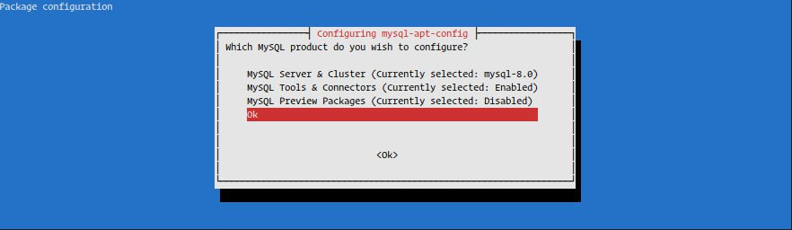
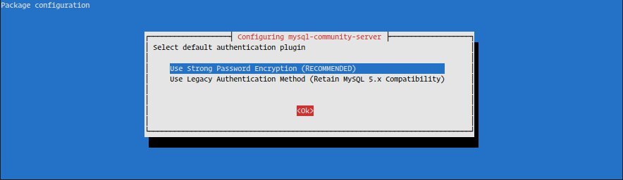

如何在 Debian 10 Linux 上安装MySQL
MySQL 是世界上最流行的开源关系数据库管理系统，而 MariaDB 是 Debian 10 中的默认数据库系统， Mysql 并不包含在 Debian 的默认软件存储库。
本教程介绍如何在 Debian 10 上从 MySQL Apt Repository 安装和配置 MySQL 。
配置 MySQL 存储库
要将 MySQL APT 存储库添加到系统，请转到存储库下载页面并使用以下 wget 命令下载最新的发行包：
wget http://repo.mysql.com/mysql-apt-config_0.8.13-1_all.deb
下载完成后，以具有 sudo 权限的用户身份安装发行包：
sudo apt install ./mysql-apt-config_0.8.13-1_all.deb
您将看到配置菜单，您可以从中选择要安装的 MySQL 版本。

MySQL 8.0 是预先选择的，如果你想安装 MySQL 5.7 ，请选择 MySQL Server & Cluster (Currently selected: mysql-8.0) 并选择你喜欢的 MySQL 版本
我们要安装 MySQL 8.0 版。按 Tab 并选择 OK 最后按下 Enter( 如上图所示)。
如果您不确定选择哪个版本，请参阅您要在服务器上部署的应用程序的文档。
安装 MySQL
通过运行以下命令更新包列表并安装 MySQL 服务器包：
sudo apt update
sudo apt install mysql-server
安装程序将要求您设置 MySQL root 密码。现在不要设置密码(留空)，我们将在下一节中进行设置。
接下来，您将看到一条消息，通知您有关新的 MySQL 8 身份验证的信息。在选择默认的 MySQL 8 身份验证插件之前，请确保您的应用程序支持它。

安装完成后， MySQL 服务将自动启动，您可以通过键入以下内容来验证它：
sudo systemctl status mysql
● mysql.service - MySQL Community Server
Loaded: loaded (/lib/systemd/system/mysql.service; enabled; vendor preset: en
Active: active (running) since Fri 2019-07-26 13:23:25 PDT; 37s ago
...
保护 MySQL
运行该 mysql_secure_installation 命令设置 root 密码并提高 MySQL 安装的安全性：
sudo mysql_secure_installation
Securing the MySQL server deployment.
Connecting to MySQL using a blank password.
VALIDATE PASSWORD COMPONENT can be used to test passwords
and improve security. It checks the strength of password
and allows the users to set only those passwords which are
secure enough. Would you like to setup VALIDATE PASSWORD component?
Press y|Y for Yes, any other key for No:
系统将要求您配置 VALIDATE PASSWORD PLUGIN 用于测试 MySQL 用户密码强度的内容。密码验证策略有三个级别：低，中和强。如果你不想来设置验证密码插件就按下 ENTER 。
Please set the password for root here.
New password:
Re-enter new password:
在下一个提示符下，将要求您为 MySQL root 用户设置密码。
By default, a MySQL installation has an anonymous user,
allowing anyone to log into MySQL without having to have
a user account created for them. This is intended only for
testing, and to make the installation go a bit smoother.
You should remove them before moving into a production
environment.
Remove anonymous users? (Press y|Y for Yes, any other key for No) : y
Success.
Normally, root should only be allowed to connect from
'localhost'. This ensures that someone cannot guess at
the root password from the network.
Disallow root login remotely? (Press y|Y for Yes, any other key for No) : y
Success.
By default, MySQL comes with a database named 'test' that
anyone can access. This is also intended only for testing,
and should be removed before moving into a production
environment.
Remove test database and access to it? (Press y|Y for Yes, any other key for No) : y
- Dropping test database...
Success.
- Removing privileges on test database...
Success.
Reloading the privilege tables will ensure that all changes
made so far will take effect immediately.
Reload privilege tables now? (Press y|Y for Yes, any other key for No) : y
Success.
All done!
设置 root 密码后，脚本还会要求您删除匿名用户，限制 root 用户访问本地计算机并删除测试数据库。你应该对所有问题回答“是”。
连接到 MySQL 服务器
要通过终端与 MySQL 交互，请使用 mysql 作为 MySQL 服务器软件包依赖项安装的客户端。
如果您选择默认身份验证方法以 root 用户身份登录 MySQL 服务器：
sudo mysql
否则，如果您选择了旧的身份验证方法来登录类型：
mysql -u root -p
系统将提示您输入 mysql_secure_installation 脚本运行时先前设置的 root 密码。输入密码后，您将看到 My SQL shell ，如下所示：
Welcome to the MySQL monitor. Commands end with ; or \g.
Your MySQL connection id is 10
Server version: 8.0.17 MySQL Community Server - GPL
...
结论
在本教程中，您已经学习了如何在 Debian 10 服务器上安装和保护 MySQL 服务器。我们还向您展示了如何连接到 MySQL shell 。
最后说一句，如果您的应用程序没有任何特定要求，您应该坚持使用 Debian 10 中的默认数据库系统 MariaDB 。